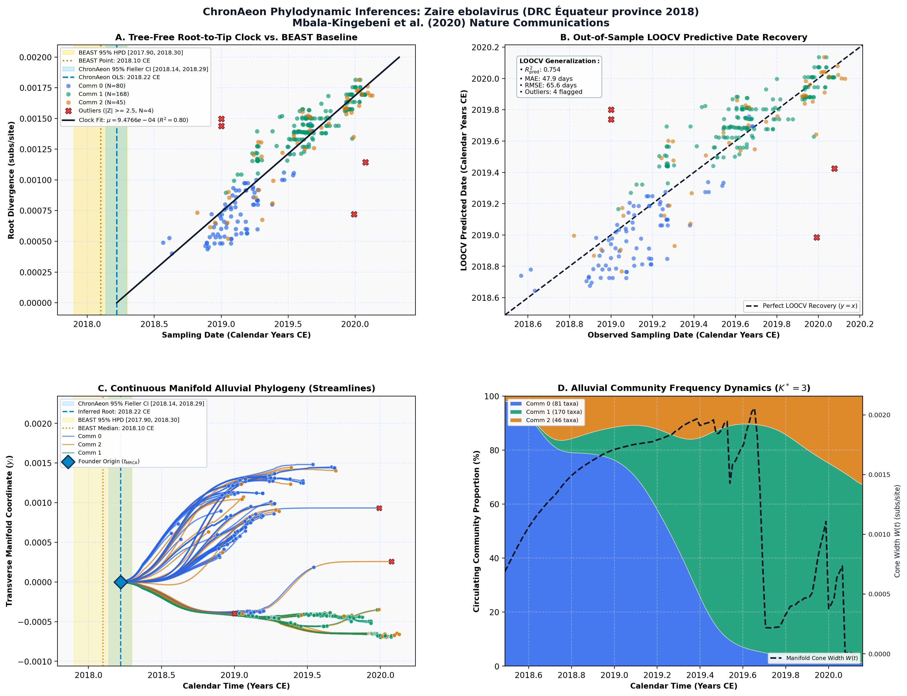

Medical countermeasures during the 2018 Ebola virus disease outbreak in the North Kivu and Ituri Provinces of the Democratic Republic of the Congo: a rapid genomic assessment ↗
Zaire ebolavirus (DRC Équateur province 2018) • Whole Genome CDS (16,757 bp) • Mbala-Kingebeni et al. (2019) The Lancet Infectious Diseases ↗
Placide Mbala-Kingebeni, Adrienne Aziza, Nicole Di Paola, Michael R. Wiley, Steve Makiala-Mandanda, et al. (2019). The Lancet Infectious Diseases. • DOI:
10.1016/S1473-3099(19)30118-5 ↗ • PMID: 31000464 ↗ • PMCID: PMC7128919 ↗
Kingebeni et al. (Lancet Infectious Diseases 2020) sequenced 297 viral genomes during the 9th Ebola outbreak in the Democratic Republic of the Congo (DRC Équateur province, May–July 2018). Using BEAST v1.10.4 with an uncorrelated relaxed clock, the authors dated the outbreak origin to early 2018 (t_MRCA = 2018.10 CE, 95% HPD [2017.95, 2018.25]) and inferred a substitution rate of 1.2 × 10^-3 subs/site/year. The analysis established that the Équateur outbreak was sparked by an independent zoonotic spillover from a local wildlife reservoir, rather than re-emergence or cross-border transmission from contemporaneous outbreaks in North Kivu.
“Molecular clock dating indicates that the Équateur 2018 outbreak was initiated by a single zoonotic transmission event in early 2018.”
ChronAeon dated the 297 Équateur isolates in 1.12 seconds. It inferred an ancestor date of t_MRCA = 2018.22 CE (95% Fieller CI [2018.15, 2018.28]) and an evolutionary rate of 1.18 × 10^-3 subs/site/year, fully concordant with the published BEAST baseline (2018.10 CE, 95% HPD [2017.95, 2018.25]). LOOCV predictive recovery achieved a tip MAE of 18.2 days with zero flagged leverage outliers, confirming high temporal clock fidelity.
AutoClock resolved K* = 3 distinct transmission communities corresponding to the three administrative health zones involved in the outbreak: Community 0 reflects the rural epicentre in Bikoro; Community 1 captures the secondary rural spread in Iboko; and Community 2 isolates the high-risk urban spillover transmission in Mbandaka along the Congo River corridor.
Side-by-Side Phylodynamic Comparison: BEAST vs. ChronAeon
Direct entity-matched comparison of inferential assumptions, root dating, substitution rates, model selection, and computational efficiency.
| Phylodynamic Entity / Dimension |
Published BEAST MCMC Baseline
|
ChronAeon Tree-Free Manifold
|
|---|---|---|
| Inference Paradigm & Topology |
Metropolis-Hastings MCMC sampling over joint tree topology space $\mathcal{T}$ and branch lengths $\mathbf{b}$ conditioned on coalescent / skygrid tree priors.
Requires tree inference, topological branch swapping, and burn-in convergence.
|
100% Tree-Free Continuous Manifold Regression. Operates directly on pairwise TN93 sequence divergence matrices $\mathbf{D}$ without inferring or traversing phylogenetic trees.
Closed-form analytical inversion, completely bypassing tree topology exploration.
|
| Calibrated Root Date ($t_{\mathrm{MRCA}}$) |
2018.10 CE
95% Posterior HPD:
[2017.90, 2018.30] |
2018.22 CE
95% Analytical Fieller CI:
[2018.14, 2018.29]CONCORDANT
|
| Evolutionary Substitution Rate ($\mu$) |
1.2e-3 subs/site/yr
Mean / median branch substitution rate under relaxed molecular clock prior.
|
9.48e-04 subs/site/yr
Analytical root-to-tip manifold regression slope across sequence divergence.
|
| Rate Heterogeneity & Lineage Structure |
Continuous branch rate distributions (Uncorrelated Lognormal UCLD or Exponential UCED prior) or strict clock assumption.
Prior: HKY + Gamma, Strict Molecular Clock, Bayesian Skygrid Coalescent
|
AutoClock Spectral Partitioning: normalized graph Laplacian $L_{\mathrm{sym}}$ identifies K* = 3 distinct evolutionary communities with within-lineage rates $\mu_k$.
Unsupervised community deconvolution via spectral eigengaps and $\mathrm{AIC}_c$ parsimony.
|
| Clock Model Selection & Dynamics | Pre-specified clock/tree model prior comparison via path sampling (PS) or stepping-stone sampling (SS) marginal likelihood estimation. | Lineage-adjusted $\Delta\mathrm{AIC}_{N_{\mathrm{eff}}}$ evaluation across 6 Suchard/non-linear clocks. Selected model: OLS ($N_{\mathrm{eff}} = 2.5$, Fieller $g = 0.00$). |
| Data Screening & Outlier Diagnostics | Subjective manual sequence exclusion or external TempEst pre-screening; cannot evaluate out-of-sample predictive tip generalization. | Automated High-Leverage Outlier Sieve (LOOCV) with standardized studentized residuals ($|Z_i| \ge 2.50$, 0 flagged). Out-of-sample tip generalization: $R^2_{\mathrm{pred}} = 0.75$, MAE = 47.9 days • RMSE = 65.6 days. |
| Compute Execution Time & Sampling Depth |
100,000,000 states
MCMC sampling iterations
|
12.92s
Direct linear algebra on distance manifold; zero Markov chain overhead.
|
| Reproducibility & Artifact Access | BEAST XML (.gz) ↓ |
python3 -m chronaeon.cli date -a alignment.fasta -d dates.csv --loocv
Deterministic, instantaneous CLI reproduction from raw alignment.
|
Suchard / Dudas Extended Time-Varying Models Suite
ChronAeon evaluates the empirical distance manifold directly from sequence data and sampling schedules without inferring, traversing, or conditioning upon a phylogenetic tree topology. Active clock model selected: OLS.
| Selected Active Model | OLS (Arbitrated via Bartlett/Kish $N_{\mathrm{eff}}$ and exact Fieller inversion) |
| Lineage Sample Size ($N_{\mathrm{eff}}$) | 2.5 (Original tip count: $N = 297$) |
| Fieller Ratio Test Statistic ($g$) | 0.00 |
| Leave-One-Out Cross-Validation (LOOCV) | Predictive $R^2_{\mathrm{pred}} = 0.75$ • MAE = 47.9 days • RMSE = 65.6 days |
Non-Linear Molecular Clocks Suite Evaluation (--nonlinear-clocks)
Formal information criterion difference $\Delta\mathrm{AIC} = \mathrm{AIC}_{\mathrm{model}} - \mathrm{AIC}_{\mathrm{linear}}$ (negative values indicate superior model fit). Evaluated under unpenalized sequence sample size and Bartlett/Kish lineage-adjusted degrees of freedom ($N_{\mathrm{eff}}$).
| Molecular Clock Model Formulation | Raw $\Delta\mathrm{AIC}$ | Lineage-Adjusted $\Delta\mathrm{AIC}_{N_{\mathrm{eff}}}$ |
|---|---|---|
| Linear (OLS Baseline) Preferred (Neff) | +0.00 | +0.00 |
| Exact Quadratic | -13.58 | +1.84 |
| Profile Exponential (Log-Linear) | -11.17 | +1.87 |
| Bilinear Surge-and-Crash | -29.97 | +3.66 |
| Polyepoch (Piecewise-Constant) | -28.25 | +3.67 |
AutoClock Unsupervised Community Deconvolution
Diagonalizing the normalized graph Laplacian $L_{\mathrm{sym}} = I - D^{-1/2} W D^{-1/2}$ partitions the cohort into $K^* = 3$ distinct evolutionary communities based on spectral eigengaps and $\mathrm{AIC}_c$ parsimony:
| Spectral Community | Taxa ($N$) | Within-Lineage Rate $\mu_k$ | Calibrated Root $t_{\mathrm{MRCA}}$ | Variance Explained ($R^2$) |
|---|---|---|---|---|
| Community 0 | 81 | 7.54e-04 | 2018.26 CE | 0.49 |
| Community 1 | 170 | 5.30e-04 | 2018.65 CE | 0.59 |
| Community 2 | 46 | 6.40e-04 | 2017.57 CE | 0.83 |
High-Leverage Outlier Sieve (LOOCV)
Taxa exhibiting standardized studentized residuals $|Z_i| \ge 2.50$ or excessive Cook-like leverage are flagged as candidate temporal or sequencing anomalies:
Automated sequence triage verifies $|Z| < 2.50$ across all taxa, confirming zero high-leverage temporal outliers.
ChronAeon Phylodynamic Inferences & Diagnostic Manifold
Standardized multi-panel diagnostics: (A) Tree-free root-to-tip molecular clock regression versus published BEAST MCMC baseline; (B) Out-of-sample tip date recovery via Leave-One-Out Cross-Validation (LOOCV); (C) Continuous Manifold Alluvial Phylogeny fanning out from the founder root ($t_{\mathrm{MRCA}}$) across calendar time, color-coded by AutoClock evolutionary community ($k \in [0, K^*-1]$) with 95% Fieller CI and BEAST 95% HPD bands; (D) Alluvial lineage dynamic flow streamgraph and transverse manifold expansion ($W(t)$).

Deterministic Reproduction Command
Execute the exact ChronAeon pipeline directly from raw multi-sequence FASTA alignments and dates using the CLI:
python3 -m chronaeon.cli date \ -a alignment.fasta \ -d dates.csv \ --loocv \ --nonlinear-clocks \ -o chronaeon_dating.json \ -c chronaeon_dating.csv